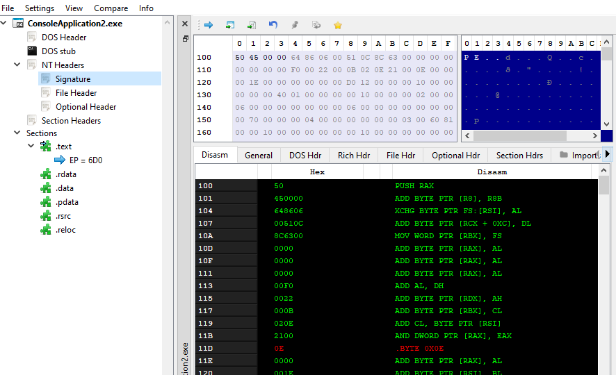
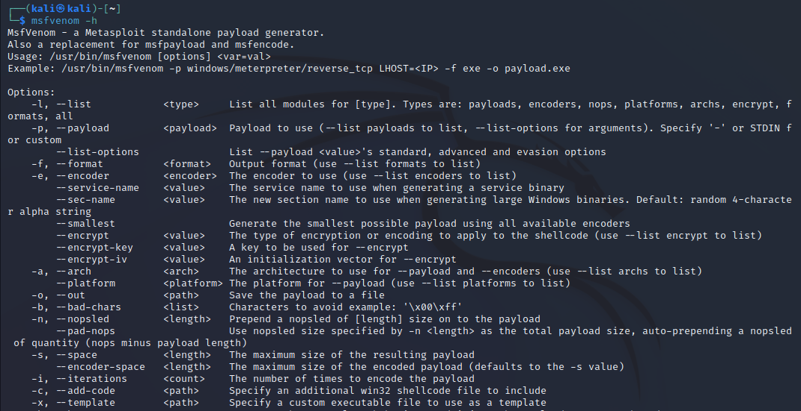

模块 50 - 解析 PE 头
模块 50 - 解析 PE 头
在初学者模块中，我们对可执行文件 (PE) 文件格式结构进行了简要讨论。该模块更着重于理论，而不是从编程角度访问各个头部的知识。本模块将解释提取 PE 文件组件的过程，并深入了解文件结构，最终成为更高级模块的先决条件。
如果不太理解 PE 结构，请复习 PE 文件结构简介模块。
PE 结构
回想一下介绍模块中显示的 PE 格式简化结构的图表。图片中显示的每个头都定义为一个数据结构，其中包含有关 PE 文件的信息。

相对虚拟地址 (RVA)
相对虚拟地址 (RVA) 是用于引用 PE 文件中位置的地址。它们用于指定 PE 文件中各种数据结构和节的位置，例如代码、数据和资源。
RVA 是一个 32 位值，指定数据结构或节距自 PE 文件开头的偏移量。之所以称其为“相对”地址，是因为它指定了自文件开头起的偏移量，而不是内存中的绝对地址。这允许在内存中以不同的地址加载同一个文件，而无需更改文件中的 RVA。
RVA 在 PE 文件格式中广泛用于指定文件内各种数据结构和节的位置。例如，PE 头包含几个 RVA，它们指定代码和数据节、导入和导出表以及其他重要数据结构的位置。
为了将 RVA 转换为虚拟地址 (VA)，操作系统会将模块的基址（模块在内存中加载的位置）添加到 RVA 中。这允许操作系统访问模块内指定位置的数据，而不管模块在内存中的加载位置。
DOS 头（IMAGE_DOS_HEADER）
DOS 头位于 PE 文件的开头，它包含了文件的信息，例如文件的大小和特征。最重要的是，它包含了 NT 头的 RVA（偏移量）。
以下代码段演示如何检索 DOS 头。
// 指向结构的指针
PIMAGE_DOS_HEADER pImgDosHdr = (PIMAGE_DOS_HEADER)pPE;
if (pImgDosHdr->e_magic != IMAGE_DOS_SIGNATURE){
return -1;
}
由于 DOS 头位于 PE 文件的最开头，因此检索 DOS 头只需将 pPE 变量强制转换为 PIMAGE_DOS_HEADER 即可。这会提供一个指向 DOS 头结构的指针。之后，执行 DOS 签名检查以验证 DOS 头的有效性。
NT 头 (IMAGE_NT_HEADERS)
DOS 头的 e_lfanew 成员是一个 RVA 到 IMAGE_NT_HEADERS 结构。要获取 NT 头，只需将 PE 文件在内存中的基址添加到偏移量 (e_lfanew) 即可。以下代码片段中演示了此操作。
// 结构的指针
PIMAGE_NT_HEADERS pImgNtHdrs = (PIMAGE_NT_HEADERS)(pPE + pImgDosHdr->e_lfanew);
if (pImgNtHdrs->Signature != IMAGE_NT_SIGNATURE) {
return -1;
}
if 语句是一个 NT 签名检查，以确认 IMAGE_NT_HEADERS 结构的有效性。
文件头(IMAGE_FILE_HEADER)
由于文件头是 IMAGE_NT_HEADERS 结构的一部分，因此可以使用以下代码行访问它。
文件头成员
IMAGE_FILE_HEADER 结构的成员如下所示。
Machine- 指定 PE 文件或目标文件的机器类型。NumberOfSections- PE 文件或目标文件中节的数量。TimeDateStamp- PE 文件或目标文件的创建时间和日期。PointerToSymbolTable- 如果存在符号表，则为符号表中的文件偏移量。NumberOfSymbols- 符号表中的符号数量。SizeOfOptionalHeader- _可选头_的大小。Characteristics- PE 文件或目标文件的特性。此字段的值由 IMAGE_FILE_* 常量定义；它们指定 PE 文件的类型（.exe、.dll、.sys）。
可选头（IMAGE_OPTIONAL_HEADER）
由于可选头是 IMAGE_NT_HEADERS 结构的成员，因此可以使用以下代码访问它。
IMAGE_OPTIONAL_HEADER ImgOptHdr = pImgNtHdrs->OptionalHeader;
if (ImgOptHdr.Magic != IMAGE_NT_OPTIONAL_HDR_MAGIC) {
return -1;
}
此 if 语句用于验证可选标头。IMAGE_NT_OPTIONAL_HDR_MAGIC 的值取决于应用程序是 32 位还是 64 位。
IMAGE_NT_OPTIONAL_HDR32_MAGIC- 32 位IMAGE_NT_OPTIONAL_HDR64_MAGIC- 64 位
根据编译器架构，IMAGE_NT_OPTIONAL_HDR_MAGIC 常量会自动扩展为正确的值。
可选头部的主要成员
以下解释了 IMAGE_OPTIONAL_HEADER 结构最重要的成员。
Magic- 指定文件中存在哪种类型的可选头。MajorLinkerVersion和MinorLinkerVersion- 指定用于创建 PE 文件的链接器版本。SizeOfCode、SizeOfInitializedData和SizeOfUninitializedData- 分别指定 PE 文件中代码、已初始化数据和未初始化数据部分的大小。AddressOfEntryPoint- 指定 PE 文件中入口点函数的地址，这是入口点的RVA。BaseOfCode和BaseOfData- 分别指定 PE 文件中代码和数据部分的基址，这些是RVA。ImageBase- 指定 PE 文件加载的首选基址。MajorOperatingSystemVersion和MinorOperatingSystemVersion- 指定运行 PE 文件所需的最低操作系统版本。MajorImageVersion和MinorImageVersion- 指定 PE 文件的版本。DataDirectory- 可选头中最重要成员之一。这是一个 IMAGE_DATA_DIRECTORY 数组，其中包含 PE 文件中的目录（如下所述）。
数据目录 (IMAGE_DATA_DIRECTORY)
数据目录可以从可选标题的最后一个成员中访问。它是一个 IMAGE_DATA_DIRECTORY 数组，这意味着数组中的每个元素都是一个 IMAGE_DATA_DIRECTORY 结构，它引用一个特殊的数据目录。IMAGE_DATA_DIRECTORY 结构如下所示。
typedef struct _IMAGE_DATA_DIRECTORY {
DWORD VirtualAddress;
DWORD Size;
} IMAGE_DATA_DIRECTORY, *PIMAGE_DATA_DIRECTORY;
此结构的字段包含以下信息：
VirtualAddress- 指定 PE 文件中指定结构的虚拟地址，这些是 RVA（相对虚拟地址）。Size- 指定数据目录的大小。
访问数据目录
PE 文件中的一些预定义数据目录包括：
IMAGE_DIRECTORY_ENTRY_EXPORT- 包含从 PE 文件导出的函数和数据的信息。IMAGE_DIRECTORY_ENTRY_IMPORT- 包含从其他模块导入的函数和数据的信息。IMAGE_DIRECTORY_ENTRY_RESOURCE- 包含 PE 文件中包含的资源（如图标、字符串和位图）的信息。IMAGE_DIRECTORY_ENTRY_EXCEPTION- 包含 PE 文件中异常处理表的信息。
可以通过以下代码行访问数据目录。
例如，检索导出目录的数据目录如下：
导出表 (IMAGE_EXPORT_DIRECTORY)
遗憾的是，在编写本模块时，微软尚未正式记录此结构。因此，为了理解该结构，本模块使用了可在互联网上找到的非官方文档。
导出表结构
导出表是一个结构，该结构定义为 IMAGE_EXPORT_DIRECTORY，如下所示：
typedef struct _IMAGE_EXPORT_DIRECTORY {
DWORD Characteristics; // 特征
DWORD TimeDateStamp; // 时间戳
WORD MajorVersion; // 主版本
WORD MinorVersion; // 次版本
DWORD Name; // 名称
DWORD Base; // 基址
DWORD NumberOfFunctions; // 函数数
DWORD NumberOfNames; // 名称数
DWORD AddressOfFunctions; // 函数地址（相对于映像基址的 RVA）
DWORD AddressOfNames; // 名称地址（相对于映像基址的 RVA）
DWORD AddressOfNameOrdinals;// 名称序号地址（相对于映像基址的 RVA）
} IMAGE_EXPORT_DIRECTORY, *PIMAGE_EXPORT_DIRECTORY;
检索导出表
IMAGE_EXPORT_DIRECTORY 结构用于存储有关从 PE 文件导出的函数和数据的信息。此信息存储在数据目录数组中，其索引为 IMAGE_DIRECTORY_ENTRY_EXPORT。可从 IMAGE_OPTIONAL_HEADER 结构获取此信息：
PIMAGE_EXPORT_DIRECTORY pImgExportDir = (PIMAGE_EXPORT_DIRECTORY)(pPE + ImgOptHdr.DataDirectory[IMAGE_DIRECTORY_ENTRY_EXPORT].VirtualAddress);
其中 pPE 是加载的 PE 在内存中的基地址，而 ImgOptHdr 是先前计算的 IMAGE_OPTIONAL_HEADER 结构。
导出表的重要成员
下列是导出表中最重要的成员：
NumberOfFunctions- 指定 PE 文件导出的函数的数量。NumberOfNames- 指定 PE 文件导出的名称的数量。AddressOfFunctions- 指定包含导出函数地址的地址数组地址。AddressOfNames- 指定包含导出函数名称地址的地址数组地址。AddressOfNameOrdinals- 指定包含导出函数序数的数组地址。
导入地址表 (IMAGE_IMPORT_DESCRIPTOR)
导入地址表是一个 IMAGE_IMPORT_DESCRIPTOR 结构的数组，每个结构代表一个包含了这些 DLL 使用的函数的 DLL 文件。
导入地址表结构
IMAGE_IMPORT_DESCRIPTOR 结构尚未得到 Microsoft 正式编制，但已在 Winnt.h 头文件中定义，如下：
typedef struct _IMAGE_IMPORT_DESCRIPTOR {
union {
DWORD Characteristics;
DWORD OriginalFirstThunk;
} DUMMYUNIONNAME;
DWORD TimeDateStamp;
DWORD ForwarderChain;
DWORD Name;
DWORD FirstThunk;
} IMAGE_IMPORT_DESCRIPTOR;
获取导入地址表
要从 IMAGE_OPTIONAL_HEADER 结构中获取导入地址表：
IMAGE_IMPORT_DESCRIPTOR* pImgImpDesc = (PIMAGE_IMPORT_DESCRIPTOR)(pPE + ImgOptHdr.DataDirectory[IMAGE_DIRECTORY_ENTRY_IMPORT].VirtualAddress);
其中 pPE 是内存中加载的 PE 的基地址，ImgOptHdr 是先前计算的 IMAGE_OPTIONAL_HEADER 结构。
其他未记录的结构
可以通过可选头中的 IMAGE_DATA_DIRECTORY 数组访问一些未记录的结构，但它们并未在 Winnt.h 头文件中记录。这些结构包括前面讨论的导入地址表和导出表，以及其他结构。以下是未记录的结构的更多示例：
IMAGE_TLS_DIRECTORY- 此结构用于存储 PE 文件中 线程局部存储 (TLS) 数据的信息。现在务必了解如何从IMAGE_OPTIONAL_HEADER结构中检索此结构；必要时将在后续模块中提供更多详细信息。
PIMAGE_TLS_DIRECTORY pImgTlsDir = (PIMAGE_TLS_DIRECTORY)(pPE + ImgOptHdr.DataDirectory[IMAGE_DIRECTORY_ENTRY_TLS].VirtualAddress);
IMAGE_RUNTIME_FUNCTION_ENTRY- 此结构用于存储 PE 文件中运行时函数的信息。运行时函数是由 Windows 操作系统的异常处理机制调用的函数，用于执行异常的异常处理代码。现在务必了解如何从IMAGE_OPTIONAL_HEADER结构中检索此结构；必要时将在后续模块中提供更多详细信息。
PIMAGE_RUNTIME_FUNCTION_ENTRY pImgRunFuncEntry = (PIMAGE_RUNTIME_FUNCTION_ENTRY)(pPE + ImgOptHdr.DataDirectory[IMAGE_DIRECTORY_ENTRY_EXCEPTION].VirtualAddress);
IMAGE_BASE_RELOCATION- 此结构用于存储 PE 文件中基本重定位的信息。基本重定位用于修复 PE 文件中导入的函数和变量的地址，当文件加载到与链接时不同地址的内存中时。现在务必了解如何从IMAGE_OPTIONAL_HEADER结构中检索此结构；必要时将在后续模块中提供更多详细信息。
PIMAGE_BASE_RELOCATION pImgBaseReloc = (PIMAGE_BASE_RELOCATION)(pPE + ImgOptHdr.DataDirectory[IMAGE_DIRECTORY_ENTRY_BASERELOC].VirtualAddress);
PE 节
了解重要的 PE 节，如 .text、.data、.reloc 和 .rsrc。此外，还可能根据编译器及其设置存在更多 PE 节。这些节中每一个都有包含其相关信息的 IMAGE_SECTION_HEADER 结构。IMAGE_SECTION_HEADER 结构定义如下：
typedef struct _IMAGE_SECTION_HEADER {
BYTE Name[IMAGE_SIZEOF_SHORT_NAME];
union {
DWORD PhysicalAddress;
DWORD VirtualSize;
} Misc;
DWORD VirtualAddress;
DWORD SizeOfRawData;
DWORD PointerToRawData;
DWORD PointerToRelocations;
DWORD PointerToLinenumbers;
WORD NumberOfRelocations;
WORD NumberOfLinenumbers;
DWORD Characteristics;
} IMAGE_SECTION_HEADER, *PIMAGE_SECTION_HEADER;
IMAGE_SECTION_HEADER 重要成员
IMAGE_SECTION_HEADER 中一些最重要的成员。
Name- 以 null 结尾的 ASCII 字符串，用于指定节名称。VirtualAddress- 该节在内存中的虚拟地址，这是一个“RVA”的缩写，表示相对虚拟地址。SizeOfRawData- 该节在 PE 文件中的字节大小。PointerToRelocations- 该节重定位文件的偏移量。NumberOfRelocations- 该节的重定位数量。Characteristics- 包含指定该节特征的标志。
获取映像节区头结构
映像节区头结构存储在 PE 文件头数组中。要访问第一个元素，请跳过 IMAGE_NT_HEADERS，因为节区位于 NT 头紧后。以下代码片段显示了如何获取映像节区头结构，其中 pImgNtHdrs 指向 IMAGE_NT_HEADERS 结构。
PIMAGE_SECTION_HEADER pImgSectionHdr = (PIMAGE_SECTION_HEADER)(((PBYTE)pImgNtHdrs) + sizeof(IMAGE_NT_HEADERS));
遍历数组
遍历数组需要获取数组大小，该大小可以通过 IMAGE_FILE_HEADER.NumberOfSections 成员获取。数组中后续的元素位于当前元素的 sizeof(IMAGE_SECTION_HEADER) 间隔处。
PIMAGE_SECTION_HEADER pImgSectionHdr = (PIMAGE_SECTION_HEADER)(((PBYTE)pImgNtHdrs) + sizeof(IMAGE_NT_HEADERS));
for (size_t i = 0; i < pImgNtHdrs->FileHeader.NumberOfSections; i++) {
// pImgSectionHdr 为指向节 1 的指针
pImgSectionHdr = (PIMAGE_SECTION_HEADER)((PBYTE)pImgSectionHdr + (DWORD)sizeof(IMAGE_SECTION_HEADER));
// pImgSectionHdr 为指向节 2 的指针
}
演示
本演示展示了本模块中共享的 PeParser 项目。它可用于使用模块中讨论的方法来解析 PE 文件。请记住，PeParser 应编译为 32 位二进制文件以解析 32 位程序，而对于 64 位程序，则应编译为 64 位。


目标
- 熟悉 PE 标头结构
- 了解如何检索 DOS、NT 和 Optional 图像文件头
- 了解如何使用 RVA 计算虚拟地址 （VA）
- 了解如何获取二进制文件的 export 和 import 表
- 解析图像的各个部分并通过 IMAGE_SECTION_HEADER 结构获取其详细信息